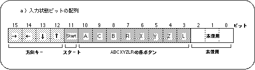

Return to previous page | Return to menu | Go to next page
Information about the device connected to the input port is secured in the system area as a set of peripheral IDs and the subsequent data string (indicating the input status of the device).
Thereafter, the device status change is expressed as the status change of the specified area, and the programmer can receive information from the input device simply by checking the status of this area.
Figure 9-2 shows only the pure device status information excluding the peripheral ID part from the device information of Saturn PAD, and expanded it into a 16-bit data string (the data that SGL outputs as peripheral data is also shown) Has been expanded to this type).
For devices other than Saturn PAD, only this part is used for actual device processing (however, the data length varies depending on the device).
The input status bits are all represented by 1 when there is no input, and the bit corresponding to the input device changes to 0 only when there is an input (while the key or button is pressed).

Figure 9-3 shows the change in the status bit string (16 bits) when there is sequential input from the state where there is no input in Saturn PAD.